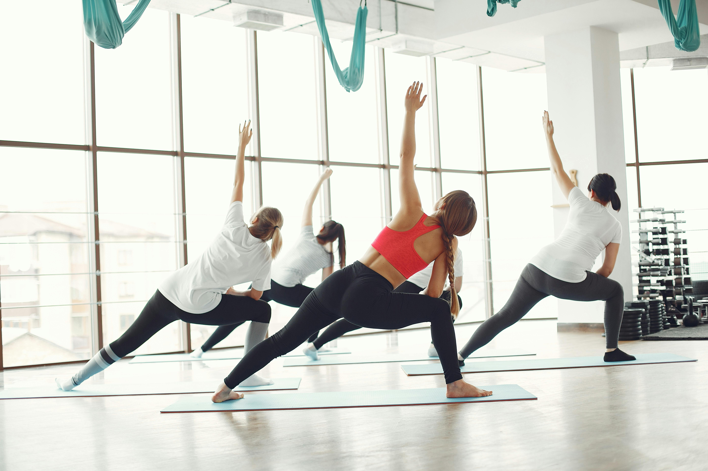
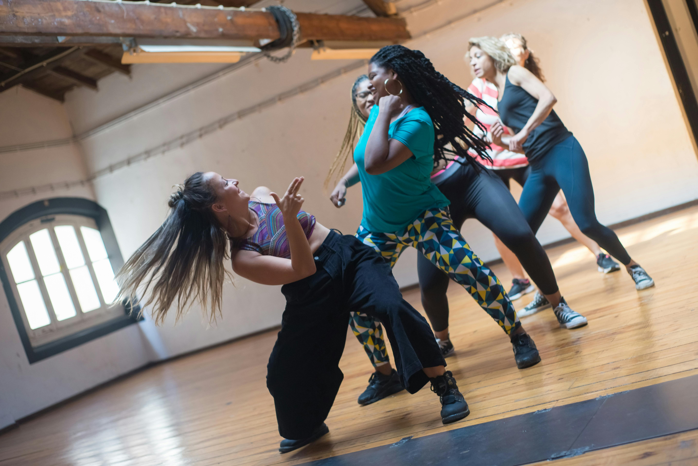

Classes & lessons
Toning
Toning exercises are exercises aimed at strengthening and toning muscles,
as well as increasing overall body tone. This includes using light dumbbells, elastic bands, low-weight aerobic exercises,
and other methods. These exercises help burn excess calories and increase muscle mass, which contributes to maintaining
a healthy weight and controlling it. Regular toning workouts can contribute to improving overall health,
including improving metabolism, reducing stress levels, and enhancing sleep quality.

Dancing
Dancing offers comprehensive exercises that improve endurance, flexibility, strength, and coordination. This helps strengthen muscles,
improve posture, and overall health. Dance includes various styles and techniques, such as hip-hop, Zumba, contemporary dance,
and others. All workouts are conducted in the gym with experienced instructors. Participation in group dance classes or
team competitions promotes socialization, helps develop teamwork skills, and establishes new connections with people who
share common interests.

Cardio
Cardio workouts are exercises aimed at improving the function of the cardiovascular system and
increasing the body's endurance. They involve activities that elevate heart rate and require increased breathing.
Examples of cardio workouts include running, walking, swimming, cycling, aerobics, and other high-intensity activities.
Regular cardio workouts improve the quality of oxygen exchange and energy processes in the body,
leading to increased endurance and overall physical fitness.

High intensity
High-intensity workouts are exercises performed with high intensity and often maximum effort. This includes short
periods of intense activity followed by periods of rest or lighter activity. Intense workouts contribute to active calorie
burning during the workout as well as prolonged increase in metabolism after the workout.
They help increase muscle strength and endurance, leading to overall improvement in physical fitness.
Wellness
The feeling of well-being and energy that comes from an active lifestyle and proper nutrition allows
people to work better, communicate effectively, and enjoy life overall. Engaging in sports and physical exercises
strengthens muscles, improves endurance and flexibility, as well as reduces the risk of cardiovascular diseases, obesity,
and other ailments. Regular workouts contribute to the production of endorphins - hormones of joy and happiness,
which help cope with stress, anxiety, and depression.

Toning
Tue-Wed
30 min
12:00
Dancing
Mon-Wed
30 min
18:30
Cardio
Tue-Thu
45 min
15:00
High Intensity
Thu-Fri
45 min
12:15
Wellness
Mon and Wed
15 min
16:20